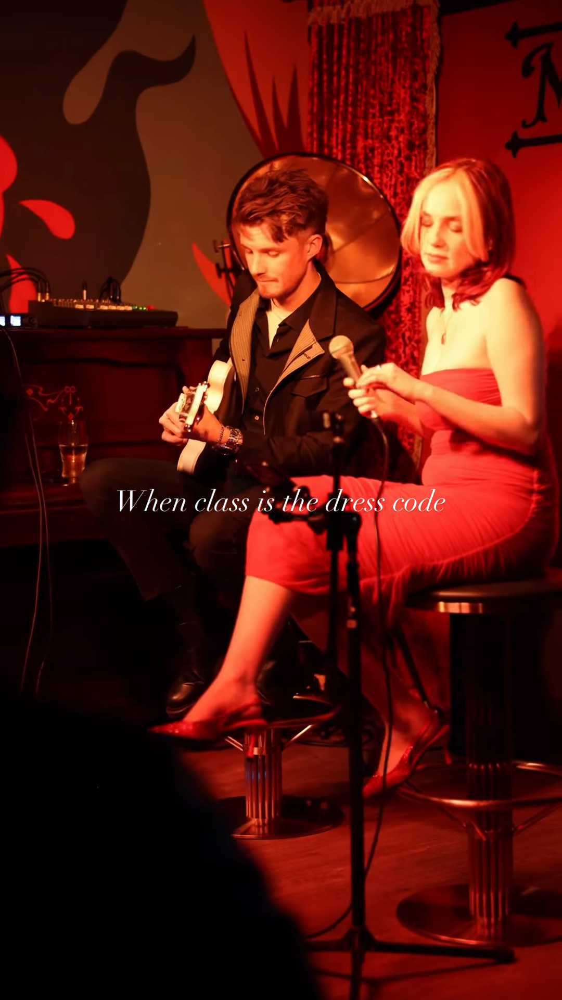
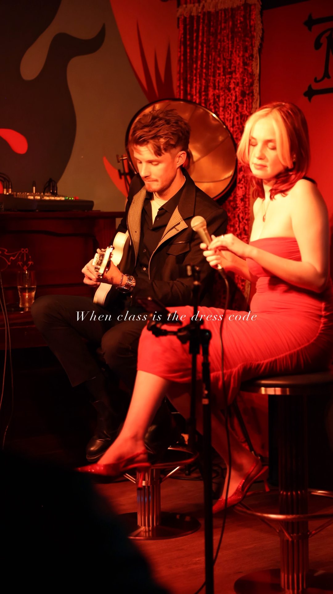
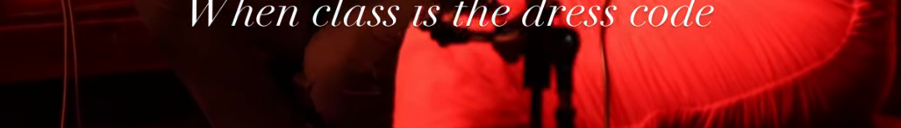
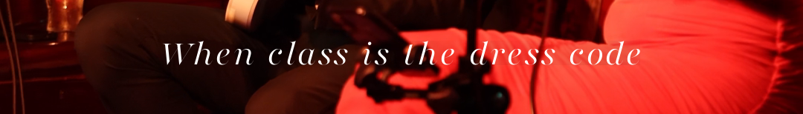
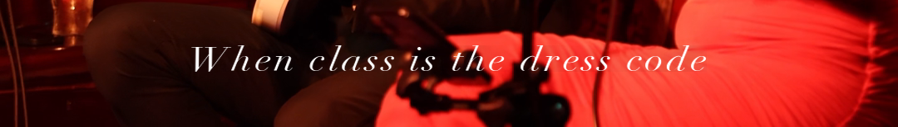
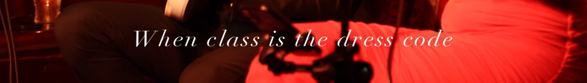
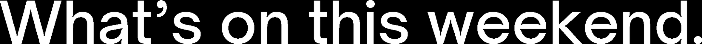

Original repeated on the left of every row. Ranked by an independent judge who scored likeness blind, plus pixel metrics (width and stroke ratios; 1.00 = identical to posted).
When class is the dress code
Posted line measured off the live reel at 1080p: wide-set, hairline-contrast Didone italic. 24 candidates brute-forced.

OG postedV1 — Playfair var, opsz 900, wght 300, wide
Judge: 84/100, ranked 1st. Nails weight, contrast and line width. Only tell: slightly bulbier ball terminals. Metrics: width 1.03, stroke 1.02.
OG posted

V2 — Didot Italic, widened 12%, tracked
Judge: 74/100. Right skeleton and width, hairlines read too thin and airy. Metrics: width 1.00, stroke 0.91.
OG postedV3 — Didot Italic, widened 6%, tracked
Judge: 60/100. Runs about 7% narrow and too light overall. Metrics: width 0.95, stroke 0.91.
Text lines at full width, original then V1 V2 V3




Pick one and I rebuild the reel with it in one pass. V1 is my recommendation and the judge's.
Merchants Yard — What's On headline
Your posted final slide vs candidates. Winner: Open Sauce Sans 500 (Medium) — stroke ratio 0.99, effectively exact. Helvetica Neue and Inter both lose on stroke. Locked in for next week's What's On.
Posted headline, then Open Sauce 500 at matched height

Font inventory, researched
Instagram stories (typed in app): Instagram Sans, proprietary to Meta, not licensed outside the app. Baked-file substitutes: Inter 700 (default look), Courier New Bold (Typewriter, effectively exact), Archivo Black (heavy caps).
Merchants Yard: Open Sauce Sans — headline weight confirmed 500, details 400, emphasis 700. Free and already bundled.
Moonshine display type: Perandory Condensed by Kulturë Type, uppercase only. Free for personal use only — commercial licence required for client work, so it is not installed. Worth Chelsea or Nico confirming the licence they hold; until then renders use the Bodoni 72 substitute. The thin italic (class reel, Today at Moonshine) is the Playfair recipe above.